Brewery
Brew beer, wine, rum, vodka and more. Real brewing takes time: ingredients ferment in a cauldron, some drinks get distilled, and the best ones age in wooden barrels. The more precise you are, the better the drink.
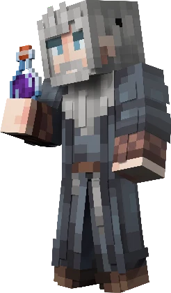
How it works
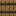
3. AgeSome drinks rest in a wooden barrelNot every drink needs every step. Each recipe below tells you exactly which steps it needs.
1. Fermenting
- Place a cauldron over a heat source, like fire, lava or a lit campfire.
- Fill it with a water bucket.
- Right-click the cauldron with each ingredient to add it. Add the exact amounts from the recipe.
- Wait while it boils. The time is in real minutes. Right-click the cauldron with a clock to see how long it has been boiling.
- Right-click with glass bottles to fill them. One cauldron fills 3 bottles.
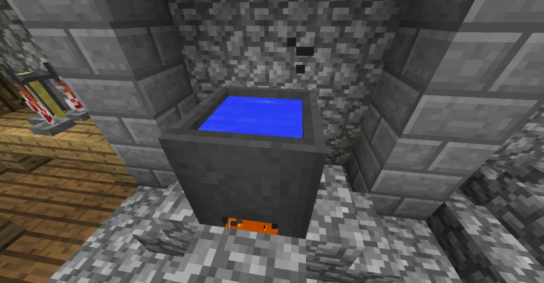
Boiling too short or too long lowers the quality. Use the clock and take the bottles out on time.
2. Distilling
Only spirits like whiskey, rum, vodka, gin, tequila and absinthe need this. Skip it for beer, wine and mead.
- Put your bottles from the cauldron into a brewing stand.
- Put glowstone dust in the top slot as a filter. It is not used up.
- Each run takes about 40 seconds unless the recipe says otherwise. Repeat as many times as the recipe needs.
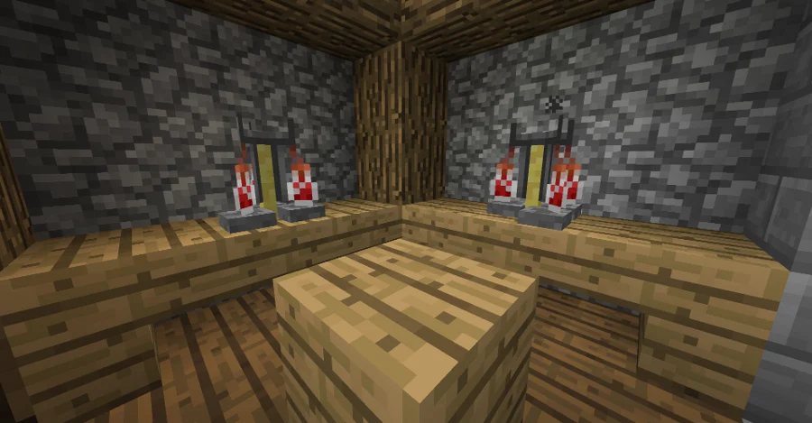
3. Aging in a barrel
Drinks that need aging rest in a barrel. On JES, one year in the barrel is 20 real minutes (one Minecraft day).
Minecraft barrel: 6 drinks
A normal crafted barrel works too. It holds up to 6 drinks and always counts as oak.
Small barrel: 9 slots
Place 8 wooden stairs in a barrel shape, then put a sign on the lower right side with Barrel on the top line. You will see "Barrel created".
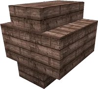
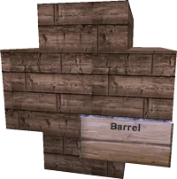
Big barrel: 27 slots
Use 5 fences, 16 wooden stairs and 18 wood planks in a barrel shape. Add a fence as the tap and a sign with Barrel on it. You can remove the sign once the barrel is created.
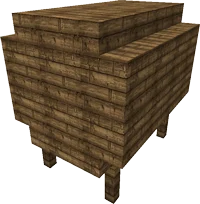
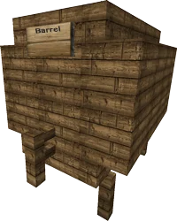
Wood types
Some drinks need a specific wood. Using the wrong wood lowers the quality.
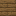
Spruce5Acacia6Dark Oak7Crimson8Warped9Mangrove10Cherry11Bamboo12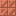
Cut Copper13Pale Oak4. Drinking
- Every drink shows its quality. Better quality means more alcohol and fewer bad side effects.
- Drink too much and you will stumble, your chat gets slurred, and you might even throw up.
- Logging off very drunk is a gamble: you may wake up somewhere strange, or back at your home.
- To sober up faster, eat bread or drink a
 milk bucket. Bad quality drinks can leave you with a hangover.
milk bucket. Bad quality drinks can leave you with a hangover.
Selling drinks: the sealing table
Shops need identical items, so seal your drinks before selling them. Craft a Brew Sealing Table with 2 glass bottles over 4 planks. It looks like a smoker. Put drinks in it to seal them. Sealed drinks stop aging and stack with others of the same kind.
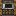
Recipes
All drinks on JES. The number on each ingredient is how many to put in the cauldron. Hover an ingredient to see its name.
Beer, wine and mead
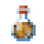
Wheatbeer
- Boil 8 min
- Age 2 years in a Birch barrel (about 40 min)
Bad: Skunky WheatbeerBest: Fine Wheatbeer
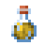
Beer
- Boil 8 min
- Age 3 years in any barrel (about 1 h)
Bad: Skunky BeerBest: Fine Beer
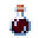
Darkbeer
- Boil 8 min
- Age 8 years in a Dark Oak barrel (about 2 h 40 min)
Bad: Skunky DarkbeerBest: Fine Darkbeer
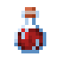
Red Wine
- Boil 5 min
- Age 20 years in any barrel (about 6 h 40 min)
Mead
- Boil 3 min
 Age 4 years in a Oak barrel (about 1 h 20 min)
Age 4 years in a Oak barrel (about 1 h 20 min)
Bad: Awkward MeadBest: Golden Mead
Sweet Apple Mead
- Boil 4 min
- Age 4 years in a Oak barrel (about 1 h 20 min)
Effects: Water Breathing
Bad: Apple MeadBest: Sweet Golden Apple Mead
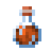
Apple Cider
- Boil 7 min
- Age 3 years in any barrel (about 1 h)
Bad: Poor CidreBest: Great Apple Cider
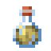
Eggnog
- Boil 2 min
- Age 3 years in any barrel (about 1 h)
Bad: Egg LiquorBest: Advocaat
Spirits
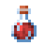
Apple Liquor
- Boil 16 min
- Distill 3×
- Age 6 years in a Acacia barrel (about 2 h)
Bad: Sour Apple LiquorBest: Calvados
Whiskey
- Boil 10 min
- Distill 2× (50s each)
- Age 18 years in a Spruce barrel (about 6 h)
Bad: Unsightly WhiskeyBest: Scotch Whiskey
Spicy Rum
- Boil 6 min
- Distill 2× (30s each)
- Age 14 years in a Oak barrel (about 4 h 40 min)
Effects: Fire Resistance, Poison
Bad: Bitter RumBest: Golden Rum
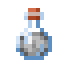
Vodka
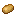
10Potato- Boil 15 min
- Distill 3×
 No aging needed
No aging needed
Effects: Weakness, Poison
Bad: Lousy VodkaBest: Russian Vodka
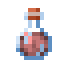
Mushroom Vodka
- Boil 18 min
- Distill 5×
- No aging needed
Effects: Weakness, Nausea, Night Vision, Blindness, Slowness
Bad: Mushroom VodkaBest: Glowing Mushroom Vodka
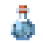
Gin
- Boil 6 min
- Distill 2×
- No aging needed
Bad: Pale GinBest: Old Tom Gin
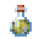
Tequila
- Boil 15 min
- Distill 2×
- Age 12 years in a Birch barrel (about 4 h)
Bad: MezcalBest: Tequila anejo
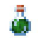
Absinthe
- Boil 3 min
- Distill 6× (80s each)
- No aging needed
Effects: Poison
Bad: Poor AbsintheBest: Strong Absinthe
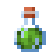
Green Absinthe
- Boil 5 min
- Distill 6× (85s each)
- No aging needed
Effects: Poison, Instant Damage, Night Vision
Bad: Poor AbsintheBest: Bright Green Absinthe
Golden Vodka
- Boil 18 min
- Distill 3×
- No aging needed
Effects: Weakness, Poison
Bad: Rancid VodkaBest: Shimmering Golden Vodka
Burning Whiskey
- Boil 12 min
- Distill 3× (55s each)
- Age 18 years in a Spruce barrel (about 6 h)
“You get a burning feeling in your mouth”
Bad: Powdery WhiskeyBest: Blazing Whiskey
Without alcohol
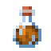
Potato soup
- Boil 3 min
- No aging needed
Effects: Instant Health
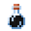
Coffee
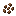
12Cocoa Beans- Boil 2 min
- No aging needed
Effects: Regeneration, Speed
Bad: Stale CoffeeBest: Strong Coffee
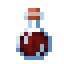
Hot Chocolate
- Boil 2 min
- No aging needed
Effects: Haste
Iced Coffee
- Boil 1 min
- No aging needed
Effects: Regeneration, Speed
Bad: Watery CoffeeBest: Strong Iced Coffee
Guide pictures from the official Brewery wiki.